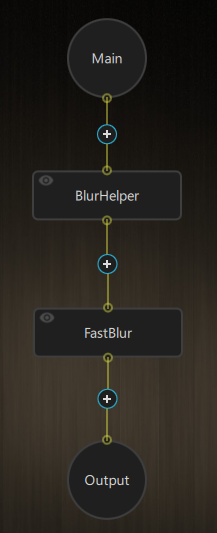
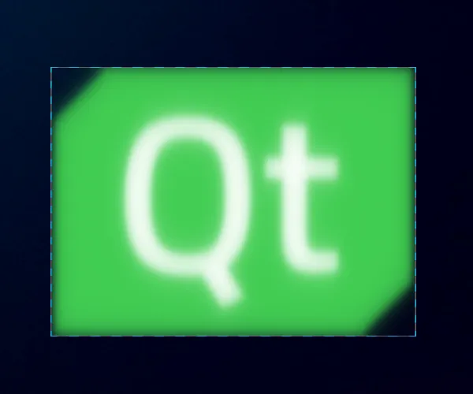
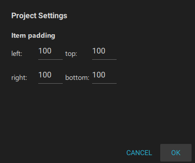

Creating a blur effect
To create a blur effect in Qt Quick Effect Maker:
- Add a FastBlur node to the node tree.
- Add a BlurHelper node to the node tree. You need the BlurHelper node for all effects that contains a blur effect.

- Select the FastBlur node and in the settings, change the fastBlurAmount value to control the amount of blur.
Adjusting item borders
The effect appears cropped. You need to adjust item borders:
- Select to display item borders.

- Go to Edit > Project Settings.
- Set the item padding for all sides to 100.

Now, you can see the complete blur effect.